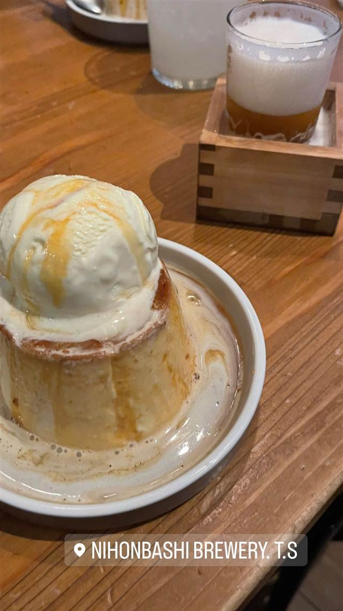
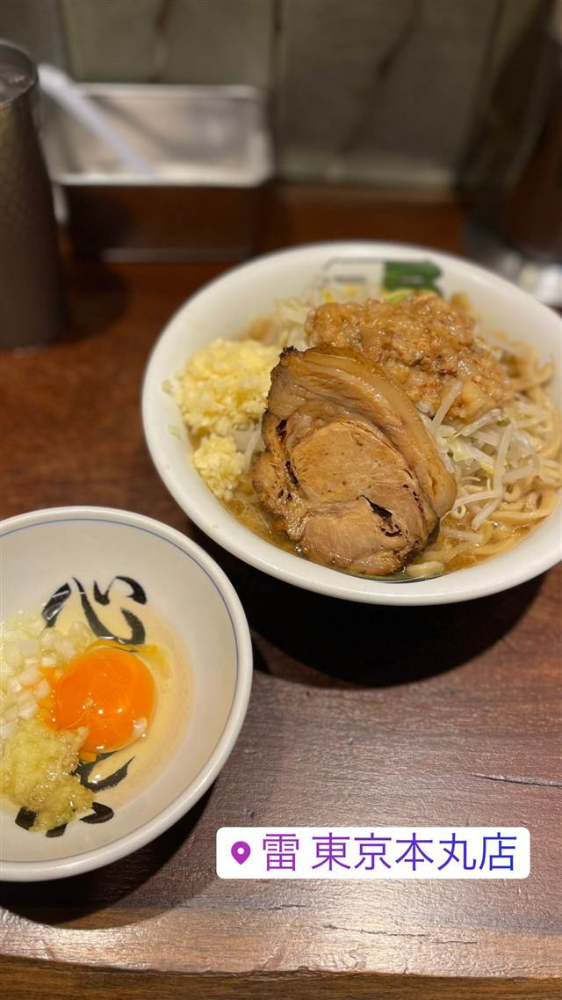
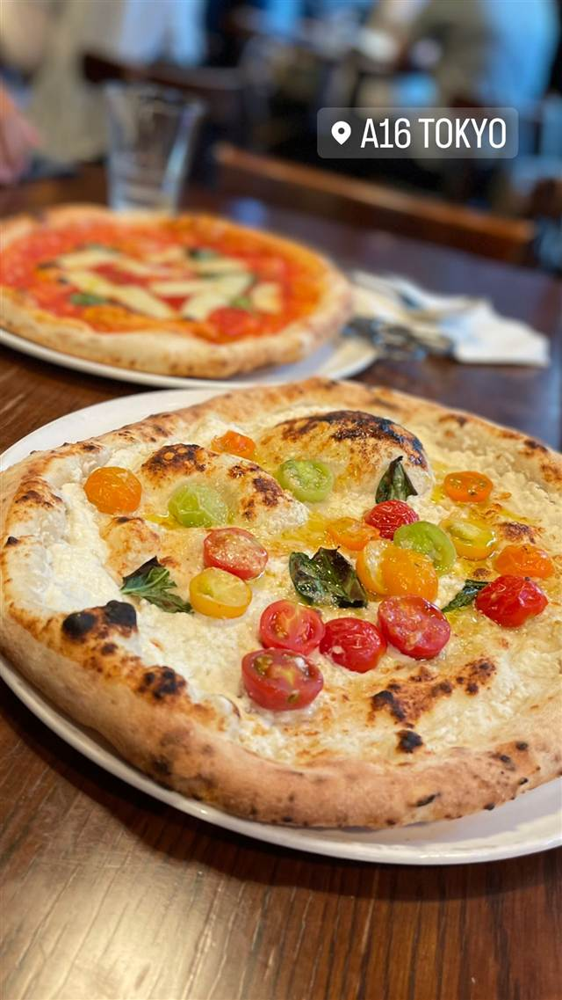
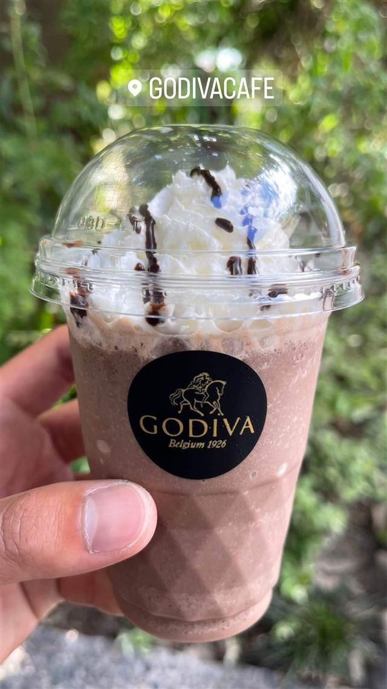
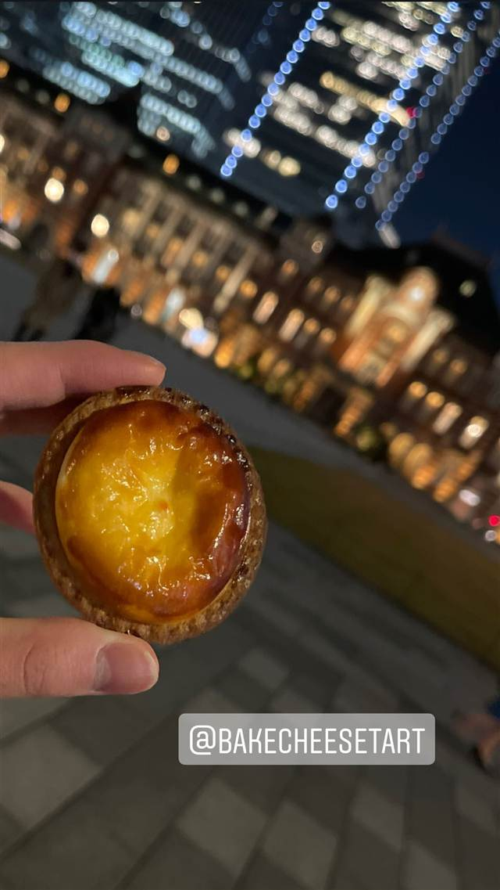

NIHONBASHI BREWERY. T.S（日本橋ブルワリー 東京ステーション）
米ポートランドの人気醸造所監修レシピのクラフトビール
NIHONBASHI BREWERY. T.S
東京駅構内の商業エリア「グランエイジ」にあるクラフトビール専門店。店名の「T.S」はTokyo Stationの略で、2017年11月に開業した。米ポートランドの人気クラフトビール醸造所「Hopworks Urban Brewery」のヘッドブリュワーが日本人向けに手がけたレシピのビールを、オーガニック・低農薬野菜を使った料理と共に楽しめる。
TRIVIA
豆知識
- 店名の「T.S」はTokyo Stationの略
- 米ポートランドの人気ブルワリーのヘッドブリュワーが監修したレシピのビールを提供している
REVIEWS
世間の評判
3.49食べログ
豊富なクラフトビールと開放的な空間
- ビールの種類が豊富で十数種類の飲み放題を楽しめると評価する声が多い
- 大きめのピザや絶品と評判のプリンなど料理の味を評価する声が多い
- 予約必須の人気店で満席時は店内がかなり賑やかになるという声がある
- サラダのおかわり対応など接客が行き届かない場面があるという声もある
食べログ 口コミ1852件
| 創業 | 2017年11月1日開業 |
|---|---|
| 系譜 | 米ポートランドの人気クラフトビール醸造所「Hopworks Urban Brewery」のヘッドブリュワーが日本人向けにレシピを監修 |
| 看板 | オリジナルIPAほか13種のクラフトビール、店舗限定ビール |
| こだわり | ポートランドの醸造家が日本人の味覚に合わせて監修したレシピ。オーガニック・低農薬野菜を使った料理を提供 |
| どこから | 都心 |
| 行くなら | 予約必須 |
| 予算 | 昼 ¥1,000～¥1,999 夜 ¥4,000～¥4,999 |
| 定休日 | 不定休 |
| 予約 | 予約可 |
| 場所 | 東京駅 東京都千代田区丸の内（東京駅八重洲側構内） |
| メモ | 東京駅八重洲側構内の商業エリア「グランエイジ」内 |
食べたもの：アイス乗せデザートとビール
NEARBY
近い店・同じ系統の店
-

★ 二郎系(インスパイア) 東京駅 ラーメン 雷 東京本丸店 名店「とみ田」が手がける、改札内で食べられる二郎系ラーメン 昼 ¥1,000～¥1,999 夜 ¥1,000～¥1,999 -

ピザ 東京駅・有楽町駅・二重橋前駅 A16 TOKYO サンフランシスコ発、南イタリア仕込みの薪窯焼きピッツァ「ポモドリーニ」 夜 ¥4,000～¥4,999 -
 コーヒー 東京駅
mammoth coffee 東京駅ヤエチカ店
韓国で700店超展開、Lサイズ約940mlの大容量コーヒー
昼 ～¥999 夜 ～¥999
コーヒー 東京駅
mammoth coffee 東京駅ヤエチカ店
韓国で700店超展開、Lサイズ約940mlの大容量コーヒー
昼 ～¥999 夜 ～¥999
-

カフェ 東京駅 GODIVA café Tokyo チョコレート専門ブランド発、椅子は北欧フリッツ・ハンセン製 昼 ¥1,000～¥1,999 夜 ¥1,000～¥1,999 -

ケーキ・パフェ 東京 BAKE CHEESE TART グランスタ丸の内店 北海道の工場から直送の原材料を目の前で焼き上げるチーズタルト 昼 ～¥999 夜 ～¥999 -
 うどん・ほうとう 東京駅
難波千日前 釜たけうどん 八重洲北口店
脱サラ店主が独学で生んだ、半熟卵天ぷらのちく玉天ぶっかけうどん
昼 ～¥999 夜 ～¥999
うどん・ほうとう 東京駅
難波千日前 釜たけうどん 八重洲北口店
脱サラ店主が独学で生んだ、半熟卵天ぷらのちく玉天ぶっかけうどん
昼 ～¥999 夜 ～¥999